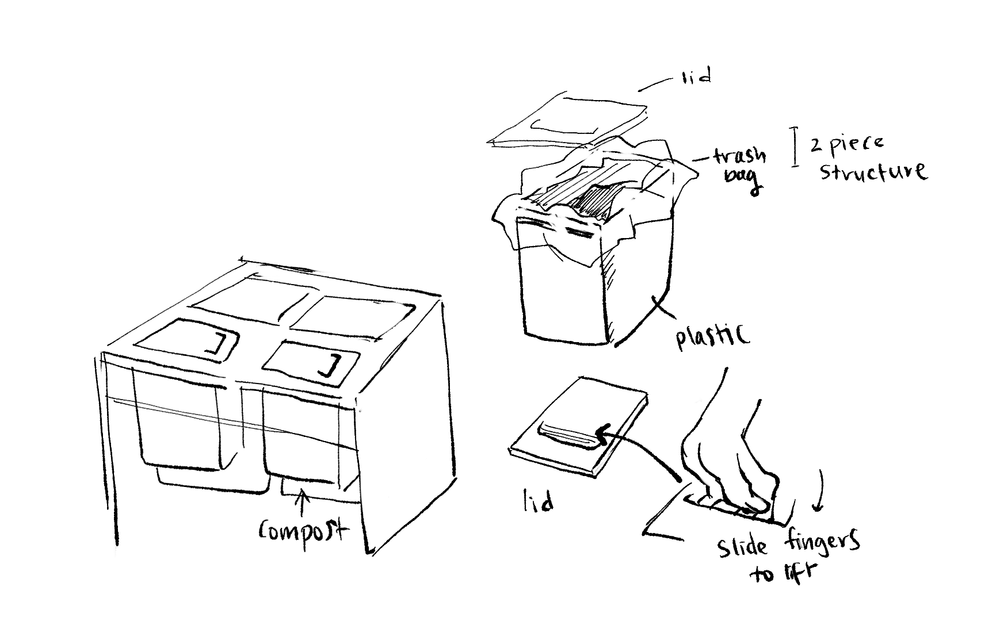
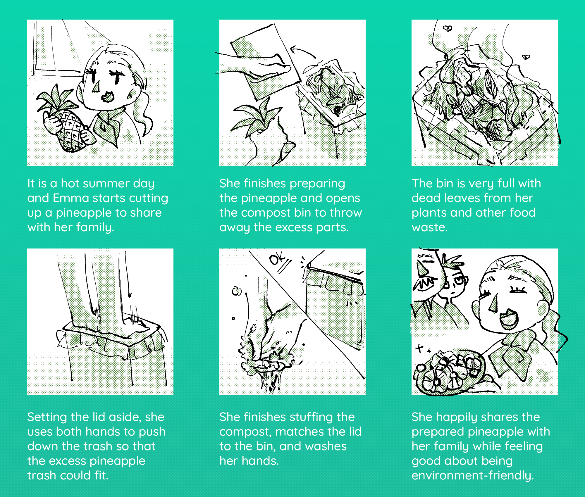

<!doctype html>
<html lang="en">

</html>

<head>
    <!-- Required meta tags -->
    <meta charset="utf-8">
    <meta name="viewport" content="width=device-width, initial-scale=1, shrink-to-fit=no">

    <!-- Bootstrap CSS -->
    <link rel="stylesheet" href="https://stackpath.bootstrapcdn.com/bootstrap/4.5.2/css/bootstrap.min.css"
        integrity="sha384-JcKb8q3iqJ61gNV9KGb8thSsNjpSL0n8PARn9HuZOnIxN0hoP+VmmDGMN5t9UJ0Z" crossorigin="anonymous">

    <title>Personas</title>
    <link rel="stylesheet" href="index.css">
    <!-- TODO: add additional links here! e.g. fonts, icons, more stylesheets, etc. -->
    <link href="https://fonts.googleapis.com/css2?family=Quicksand&display=swap" rel="stylesheet">
    <meta content="width=device-width, initial-scale=1" name="viewport" />
    <meta charset="utf-8">
</head>

<body>
    <!-- TODO: put your HTML code here! -->
    <div class="nav-wrapper">
        <nav class="navbar navbar-expand-lg navbar-light" style="width: 100%">
            <a class="navbar-brand" href="#">
                <h1>Kiwi</h1>
            </a>
            <button class="navbar-toggler" type="button" data-toggle="collapse" data-target="#navi">
                <span class="navbar-toggler-icon"></span>
            </button>

            <div class="collapse navbar-collapse" id="navi">
                <ul class="navbar-nav">
                    <li class="nav-item">
                        <a class="nav-link" href="../home.html">Projects <span class="sr-only">(current)</span></a>
                    </li>
                    <li class="nav-item">
                        <a class="nav-link" href="../about.html">About</a>
                    </li>
            </div>
        </nav>
    </div>
    <div class="heading">
        <h1 style="padding-top: 10px">Personas & Storyboarding</h1>
        <h3 style="padding-bottom: 10px"> Focus on Kitchen Compost Bin</h3>
    </div>

    <div class="wrapper">
        <div class="tabs">
            <div class="tab">
                <input type="radio" name="css-tabs" id="tab-1" checked class="tab-switch">
                <label for="tab-1" class="tab-label">Introduction</label>
                <div class="tab-content">
                    <div class="flex-col">
                        <h4>
                            Story:
                        </h4>
                        <p>
                            One day at lunch, my mother started giving a half-hour long speech
                            lecturing our family members on the importance of waste-sorting
                            after she discovered an orange peal in the recycling instead of
                            compost. My father responded by sighing in annoyance and my brother
                            eagerly defended himself as being a great community member who always
                            sorts his trash even though I have seen him throw compost in regular
                            trash multiple times. I, on the other hand, started wondering why
                            our family members respond differently to our kitchen trash system.
                            Therefore, I chose our kitchen trash system as the interface I am
                            observing and I interviewed my family with a focus on the compost
                            bin for this project.
                        </p>
                        <h4>
                            Personas & Storyboard:
                        </h4>
                        <p>
                            I observed users interacting with the Kitchen Compost Bin
                            and created personas and storyboards. It is interesting to hear
                            about the motivations behind trash-sorting from different perspectives.
                        </p>

                    </div>
                </div>
            </div>
            <div class="tab">
                <input type="radio" name="css-tabs" id="tab-2" class="tab-switch">
                <label for="tab-2" class="tab-label">Preparation</label>
                <div class="tab-content">
                    <div class="flex-col">
                        <h4>
                            Inteface: Kitchen Compost Bin
                        </h4>
                        <p>
                            The interface I chose to observe is the kitchen compost bin.
                            This compost bin is used mainly by my family members. It seems like a generic bin, so there are probably a lot of other users with the same model.
                            Below is a diagram of the interface. The interface is composed of a lid, a box, a plastic bag, and compostable waste.
                            The box body contains a metal handle for users to lift the bin with. This makes it easier for users to carry the bin to larger comost bins (usually outdoors).
                            The main difficulty with this interface is the compost bin’s lid.
                            The compost requires a lid because the contents are often stinky
                            yet the lid’s design discourages users to open the container.
                        </p>
                        <h4>
                            Sketch:
                        </h4>
                        <div class="photo-div">
                            
                        </div>
                    </div>
                </div>
            </div>
            <div class="tab">
                <input type="radio" name="css-tabs" id="tab-3" class="tab-switch">
                <label for="tab-3" class="tab-label">Reading Observations</label>
                <div class="tab-content">
                    <h4>
                        Interview Questions:
                    </h4>
                    <ol>
                        <li>Did you use the compost today? Did you see someone else use the compost today?</li>
                        <li>Can you throw away this orange peel for me?</li>
                        <li>Can you show me how you hold the lid of the bin?</li>
                        <li>Are you satisfied with this compost bin?</li>
                        <li>Do you remember a time where you forgot to use the compost?
                            <ul>
                                <li>If possible, tell me the story about that time</li>
                            </ul>
                        </li>
                        <li>What features of the compost bin do you think could be improved?</li>
                        <li>Would use the compost instead of throwing in the regular trash? If so, why?</li>
                        <li>How do other family members use the compost?</li>
                        <li>Describe your ideal compost bin</li>
                    </ol>
                    <br>
                    <br>
                    <h4>
                        Key Observations & Summary of Responses
                    </h4>
                    <br>
                    <h5>
                        User 1
                    </h5>
                    <p style="text-decoration: underline;">
                        Behavior Observations:
                    </p>

                    <ul>
                        <li>Washes hands with soap and water after touching compost lid</li>
                        <li>Returns the lid to cover compost exactly</li>
                        <li>Used a tissue paper to cover their hand when touching lid</li>
                        <li>Swift with movements, minimal contact of fingers with lid</li>
                        <li>Lifted lid only when they wanted to throw something</li>
                    </ul>
                    <p style="text-decoration: underline;">
                        Response Summary:
                    </p>
                    <p>
                        They used the compost today and they generally dislikes using the compost.
                        He hopes that there could be air-refreshner system so that the compost
                        will not smell so terrible. They hope the lid could be attached to the
                        bin so that they would not have to worry about holding it up in air as they
                        throw away trash. They describe their reason for using the compost as
                        “being a good citizen.” They represent a younger, regular user for the interface.
                    </p>
                    <br>
                    <h5>
                        User 2
                    </h5>
                    <p style="text-decoration: underline;">
                        Behavior Observations:
                    </p>

                    <ul>
                        <li>Did not wash or wipe hands after coming in contact with compost bin</li>
                        <li>Returns the lid to roughly cover bin</li>
                        <li>Kept bin open when cutting vegetables/fruits</li>
                        <li>Transfer miscategorized trash from recycling/normal trash to compost</li>
                        <li>Rushed movements, held lid with force using all five fingers</li>
                    </ul>

                    <p style="text-decoration: underline;">
                        Response Summary:
                    </p>
                    <p>
                        They say that they used the compost today and they appreciates the
                        compost’s existence. They hope that the bin could be larger to fit more trash
                        and the lid could lift upon a click so that her actions can be more streamlined.
                        (Currently, They have to rest the lid on top of the other trash lid and then throw
                        the items away). They describe their reason for using the compost as “being eco-friendly”
                        and “allowing the trash to be more productive.” They represent a frequent user of the compost.
                    </p>
                    <br>
                    <h5>
                        User 3
                    </h5>
                    <p style="text-decoration: underline;">
                        Behavior Observations:
                    </p>

                    <ul>
                        <li>Wipes hands with tissue paper after touching compost lid</li>
                        <li>Periodically cleans compost bin with rags</li>
                        <li>Left lid open as they peeled orange/eat fruit</li>
                        <li>Careful movements, gentle with lifting lid</li>
                        <li>Would often place compost trash on counter top when changing trashbags</li>
                    </ul>

                    <p style="text-decoration: underline;">
                        Response Summary:
                    </p>
                    <p>
                        They pause for a bit and says that they did use the compost today.
                        They do not feel any dis-satisfaction with the compost bin.
                        They did not describe any specific ideas for improvement.
                        Their reason for their use of the compost is for the trash-truck
                        to accept the trash: if the trash is not catagorized, the
                        trash truck will not take it. They represent a user
                        who does not actively try to use the compost.
                    </p>

                    <br>
                    <h5>
                        General Trends:
                    </h5>
                    <p>
                        All users agree that User 1 uses the compost bin most often.
                        All users except for User 1 finds some way to clean their hands
                        after touching the bin. User 1 and User 2 both hope that the
                        lid is not detached from the bin.
                    </p>

                </div>
            </div>
            <div class="tab">
                <input type="radio" name="css-tabs" id="tab-4" class="tab-switch">
                <label for="tab-4" class="tab-label">Personas and Storyboard</label>
                <div class="tab-content">
                    <h4>
                        Personas: Eco-friendly Emma & Could-not-care Caleb
                    </h4>
                    <p>
                        From the interviews and observations from the previous section,
                        I developed two personas to represent users for the compost bin.
                        I tried to develop personas who would cover different groups of users.
                    </p>
                    <div class="flex-row">
                        <div class="photo-div">
                            
                        </div>
                        <div class="photo-div">
                            
                        </div>
                    </div>
                    <br>
                    <br>
                    <h4>
                        Storyboard: Eco-friendly Emma
                    </h4>
                    <p>
                        Building off of the persona Eco-friendly Emma, I illustrated
                        a storyboard presenting a scene of Emma using the compost
                        bin interface.
                    </p>
                    
                </div>
            </div>
            <div class="tab">
                <input type="radio" name="css-tabs" id="tab-5" class="tab-switch">
                <label for="tab-5" class="tab-label">Conclusion</label>
                <div class="tab-content">
                <h4>Conclusion and Takeaways</h4>
                <p>
                    From this activity, I was able to learn how to gather data/feedback from users and use that data to generate personas to describe users for a particular interface. Furthermore, I was able to use the personas I created to describe the interaction the potential user has with the interface through a storyboard.
                </p>
                <h4>
                    Takeaways:
                  </h4>
                  <ol>
                    <li>I learned how to craft questions that are not "leading questions".</li>
                    <li>In general, I recieved positive feedback for the personas and storyboard I developed.</li>
                    <li>I was notified that my storyboard could be extended to I was notified that my storyboard could be extended to better feature the user's interaction with the interface from start to end. </li>
                    <li>This project writeup was my first html experience and it was definitely difficult but exciting. </li>
                  </ol>
                </div>
            </div>
        </div>
    </div>

    <!-- Optional JavaScript -->
    <!-- jQuery first, then Popper.js, then Bootstrap JS -->
    <script src="https://code.jquery.com/jquery-3.5.1.slim.min.js"
        integrity="sha384-DfXdz2htPH0lsSSs5nCTpuj/zy4C+OGpamoFVy38MVBnE+IbbVYUew+OrCXaRkfj"
        crossorigin="anonymous"></script>
    <script src="https://cdn.jsdelivr.net/npm/popper.js@1.16.1/dist/umd/popper.min.js"
        integrity="sha384-9/reFTGAW83EW2RDu2S0VKaIzap3H66lZH81PoYlFhbGU+6BZp6G7niu735Sk7lN"
        crossorigin="anonymous"></script>
    <script src="https://stackpath.bootstrapcdn.com/bootstrap/4.5.2/js/bootstrap.min.js"
        integrity="sha384-B4gt1jrGC7Jh4AgTPSdUtOBvfO8shuf57BaghqFfPlYxofvL8/KUEfYiJOMMV+rV"
        crossorigin="anonymous"></script>

</body>

</html>

<!-- Sources/Sites references/used -->
<!-- Tabs formatting:
        https://getbootstrap.com/docs/4.5/components/navs/
        https://codepen.io/tutsplus/pen/VLeXqy
     Google Fonts:
        https://fonts.google.com/specimen/Quicksand
    -->